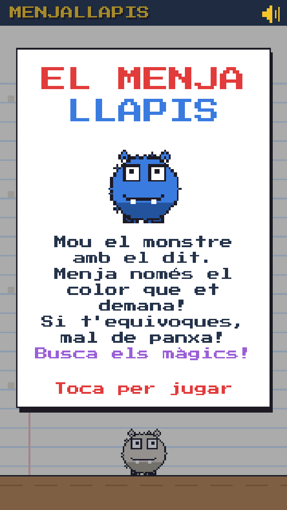
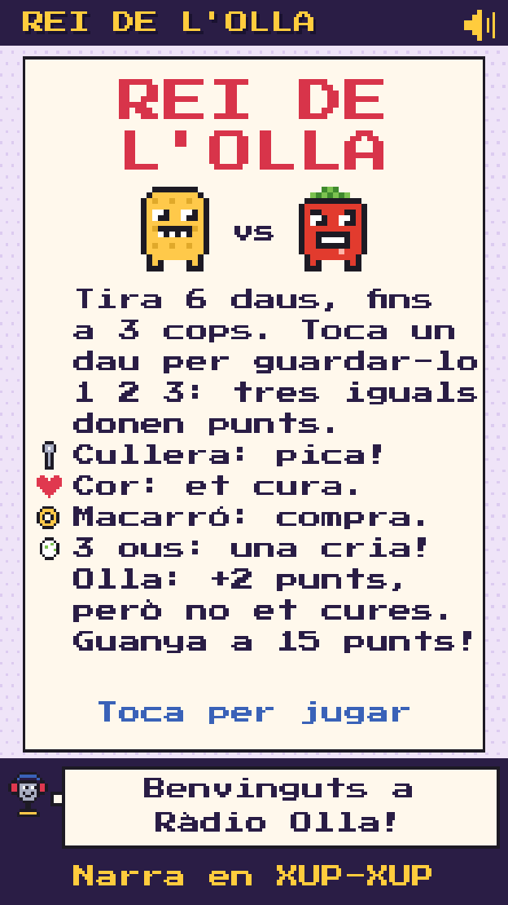
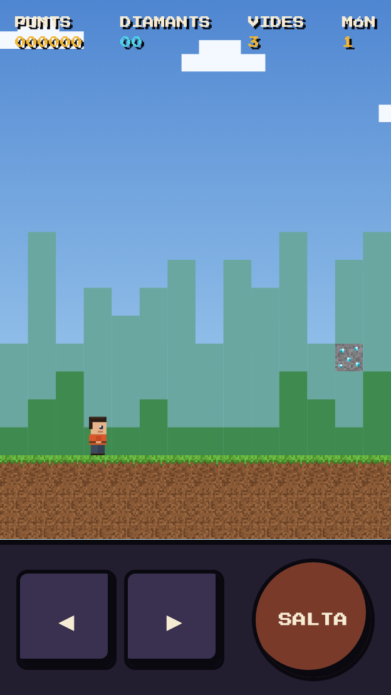

El Menjallapis
Mou el monstre amb el dit i mastega només el llapis del color que et demana. Si t'equivoques, rot de colors! Caça els llapis màgics: arc de Sant Martí, or, gel i imant.
JUGA > Màquina 22 JUGADORS
Rei de l'Olla
El Macarró i el Tomàquet es barallen per l'olla de macarrons. Tira els daus, pica amb la cullera, pon ous i fes evolucionar les cries. Narra en Xup-Xup, de Ràdio Olla.
JUGA > Màquina 31 JUGADOR
Blocaventura
Ajuda en Pixel a creuar tres mons de blocs: el prat, el bosc de cirerers i les terres de foc. Salta sobre els monstres, pica blocs de diamant i troba pics, pomes i plomes màgiques.
JUGA >